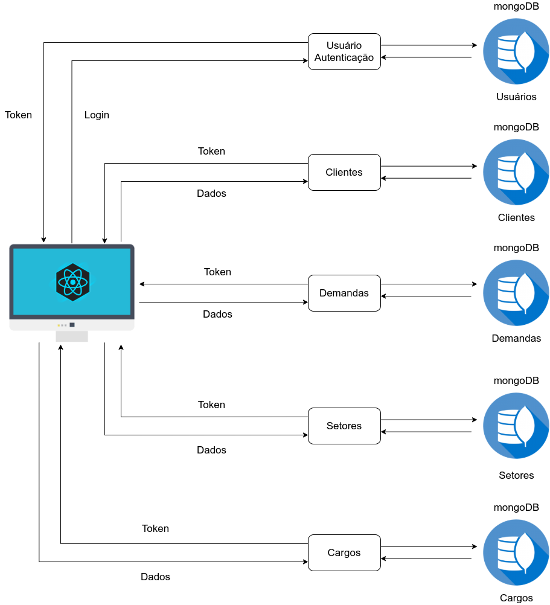
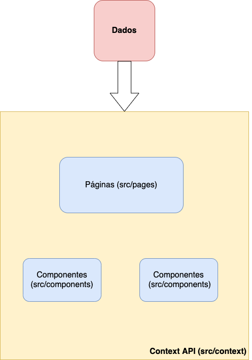
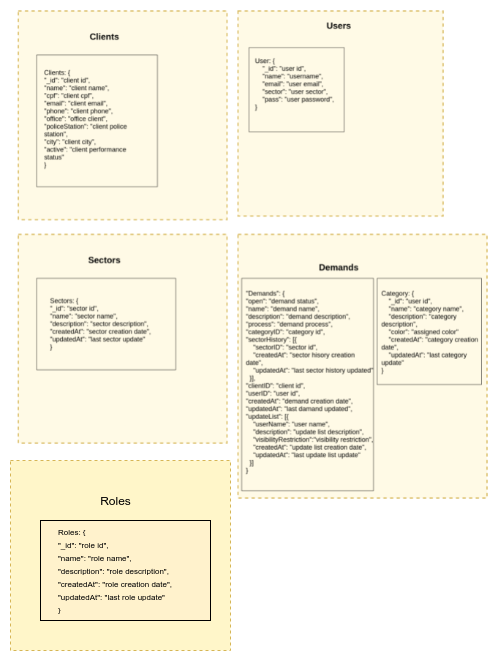
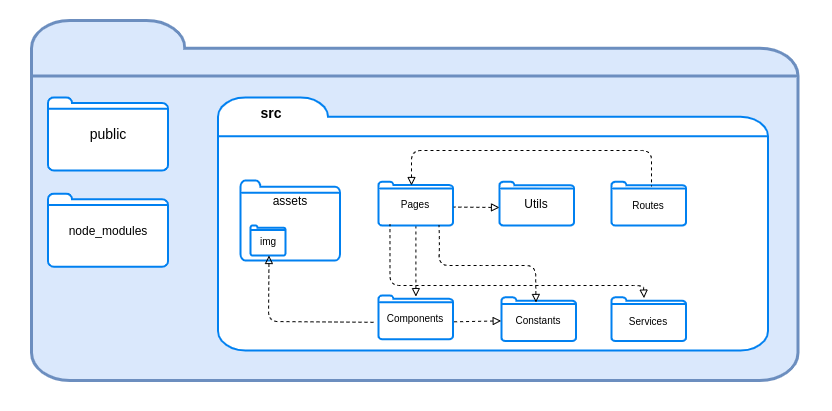
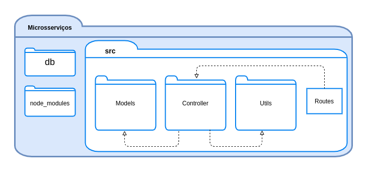

Documento de Arquitetura
Introdução
Finalidade
Esse documento de arquitetura tem como finalidade esclarecer e especificar decisões arquiteturais pertinentes durante o desenvolvimento do projeto, oferecendo uma visão geral das tecnologias e funcionalidades utilizadas.
Escopo
O SiGeD (Sistema de Gerenciamento de Demandas) consiste em uma aplicação web que visa facilitar a gerência dos processos da Divisão de Proteção à Saúde do Servidor (DPSS).
Nesse documento de arquitetura, é feita uma descrição dos termos arquiteturais utilizados no desenvolvimento desse produto de software.
Representação da Arquitetura
Diagrama de relações

O diagrama representa a divisão da aplicação em microsserviços de usuário, clientes, demandas, setores e cargos.
Diagrama React/Microsserviços
REACT
A aplicação web utiliza no front-end o framework React. A divisão é feita em Pages, Services, Components e Constants.
-
Pages: armazena as telas do website.
-
Services: local onde são realizadas as comunicações com a API.
-
Components: reúne os componentes utilizados nas telas da aplicação, como botões e a navbar.
-
Constants: armazena os códigos das cores utilizadas.
MICROSSERVIÇOS
Os microsserviços foram construídos utilizando Nodejs e o framework Express.js, onde cada microsserviço tem um banco de dados independente. Para o controle e armazenamento dos dados, foi empregado o banco de dados não relacional MongoDB.
Dada a alta escalabilidade dos microsserviços, foram definidos cinco para essa aplicação, sendo eles o de usuários, responsável pela autenticação, o de demandas, clientes, setores e cargos. O padrão JWT foi utilizado para fazer essa autenticação, portanto, um token é gerado no microsserviço de usuários e salvo na aplicação. Uma vez que haja um token válido, é possível fazer requisições em todos os microsserviços utilizando-o.
Diagrama Context API
A Context API é um recurso nativo do React que envolve toda a aplicação e, pode ser utilizado para fornecer estados globais para todos os elementos que necessitem dessa informação dentro da aplicação.
Esse recurso foi utilizado na aplicação principalmente para armazenar e utilizar os dados do usuário logado. Abaixo, é possível ver uma representação de como funciona e em qual parte do projeto esse recurso é utilizado.

Metas e Restrições de Arquitetura
Metas:
- Estabilidade do sistema;
- Clareza na apresentação das funcionalidades;
- Fácil manutenção;
Restrições:
- React: framework javascript utilizado para a criação da interface do usuário;
- Node.js: desenvolvimento dos microsserviços;
- MongoDB: banco de dados não relacional;
Visão de Implementação
Modelagem de dados

Diagrama de pacotes
Frontend

Backend

Referências
Equipe de GCES do SiGed 2020-2 - Documento de arquitetura Disponível em: https://fga-eps-mds.github.io/2020-2-SiGeD/architecturedocument/. Acesso em: 15 mar. 2022.
Histórico
| Versão | Data | Modificação | Autor(es) |
|---|---|---|---|
| 0.1 | 14/03/2022 | Criação do documento | Murilo |
| 0.2 | 15/03/2022 | Adição do serviço de cargos | Murilo |
| 1.0 | 15/03/2022 | Finalização da primeira versão e revisão | Murilo |
| 2.0 | 18/03/2022 | Adição das referencias | Rafael |